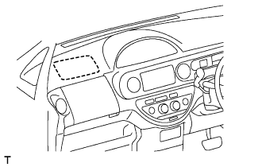
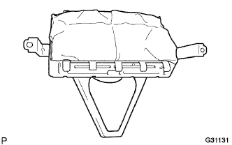

Instrument panel passenger airbag Assy (door pear) inspection |
| 1. Instrument panel passenger airbag Assy (door pear) inspection |
|  |
Vehicles that are not involved in the collision
If the following items are applicable, replace the instrument panel passenger airbag Assy with a new one.
|  |
Vehicles that have collided but have not operated an airbag
If the following items are applicable, replace the instrument panel passenger airbag ASSY and instrument panel with a new one.